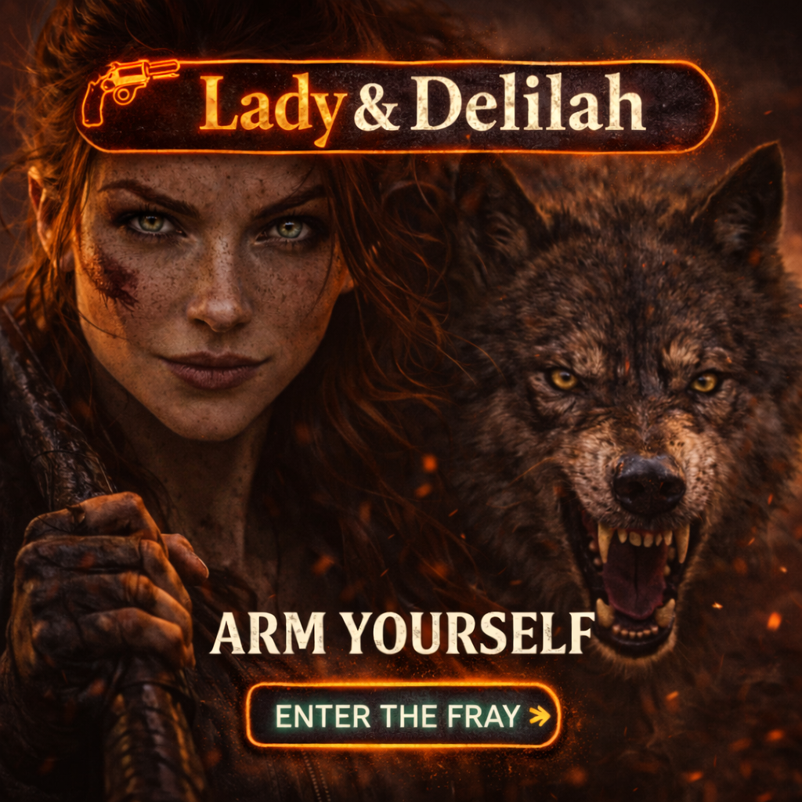

Path 01
Lore Archive
Character notes, world rules, threats, allies, and a proper mythology section once the story hardens.

Channel Pending
A harder mythology is forming here. For now, this page serves as the threshold: a signal, a face, and a promise of what is still coming.
Not every story enters quietly. Some arrive with teeth.
Placeholder Broadcast
This page is intentionally spare for now. It gives Lady & Delilah a dedicated place in the system before the full world, lore, and artifacts are ready to surface.
Current Framing
Right now, this signal exists as a strong visual and a tonal promise. That is enough. It establishes presence without pretending the archive is complete.
Status
Future content can expand into lore, world rules, character notes, books, merch, or any hybrid path this channel becomes.
Development Notes
Until you build the deeper canon, this page can hold clean placeholders that still feel intentional and on-brand.
Path 01
Character notes, world rules, threats, allies, and a proper mythology section once the story hardens.
Path 02
A launch point for novels, installments, or future episodes connected to this channel.
Path 03
Posters, symbols, relics, or future merch once the visual language is more fully locked.